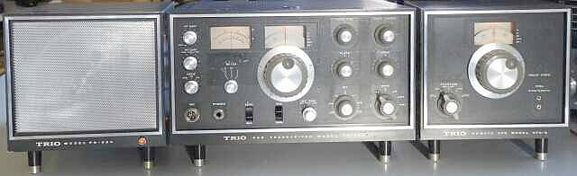
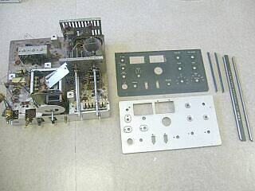
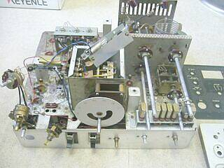
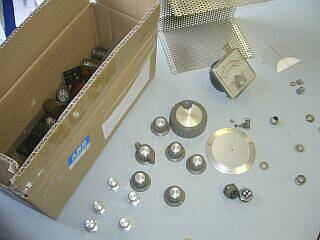
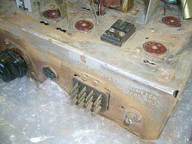
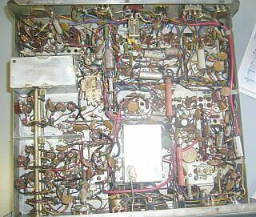
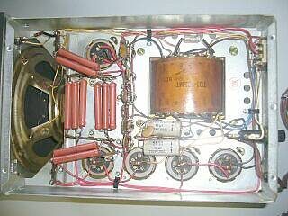
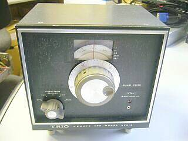
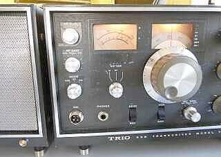

多分ですが、国内第1号のＳＳＢトランシーバーではないかと思います（１９６６年の発売）
当時中学生だった私に、よくも買い与えてくれたものと、改めて亡き父に感謝です
１９６８年 本体が、￥８３，０００だったと思いますが、当時の大卒初任給と比較してみて下さい
今、孫に￥５０万の何かを買ってくれとせがまれも、即答できませんＨｉ |

ほぼ同時期に、ＹＡＥＳＵから ＦＴ－（ＤＸ）１００、ＦＴ－５０、そしてＦＴ－ＤＸ４００が登場します |
当時は、とても外部ＶＦＯまでは手に出来ませんでしたが、縁あって今回一式で入手できました
ＶＦＯ接続ケーブルを作ってまで使おうと言う気はないので、再生対象は、本体と電源までとしました |
 |
５０年近い時間が経過していますので、ある意味ぼろぼろ状態です
保管が悪いとこうなるということを「絵」に描いたような状態での入手です
実用になるところまで、再生できるかなぁ
まずは、できるところから・・・分解・清掃からスタートです
フロントパネルなどは、亀の子たわしで洗って乾燥させせました
国産品は、シャーシは鉄というのが通例
フロントパネルはアルミ板ですが、塗装からは白い吹き出物？があります
この白い吹き出物？は、洗っても取れません！ |
 |
この写真では綺麗そうに見えますが・・・
電源SW付きAFボリューム
最初は一見、きちんと動いていたのですが、ゴソゴソしているうちにSW部が壊れて（スプリングが折れた！）動作しなくなってしまいました
これまた入手しづらいφ２４ ５００KΩAカーブ S付きボリュームを探さないと・・・
幸いにも、軸はローレットでしたが、ほぼ同規格のものの入手が出来ました、やれやれ・・・ |
 |
シャーシ・パネルの清掃のため、外せるもの・・・メーター、グリル、真空管やツマミ類を外し、こちらもそれぞれのクリーニングを実施
日焼けしたプラスチックについては、手が打てません
この便に、ＭＩＣジャックは、３Pから標準の４Pに交換しました（オリジナルは、確か４Ｐだったかと）
ダイヤル・メカには、シリコングリスを塗布
メータには2石（２Ｊｅｗｅｌ）と表記してありました
きちんとしたメータ・・・です |
 |
写真では一見アルミに見えますが、鉄シャーシです
刻印が読めないくらい錆が生じていました
２４０番のサンドペーパーで磨きました
ペーパーをかけたところと、そうでないところの差は、左写真の通りです
あとは、半練りコンパウンドと、エタノール（アルコール）が活躍します
ここまで手を入れた再生は、初めてです！！
ビスも錆び錆びで交換
ここで新発見！？・・・ビスはISO規格ではありません、JIS規格のビスです
これも入手に一苦労・・・交換用に鉄ビス（ユニクロメッキ）しか入手できませんでした |
 |
一般的には、部品点検は､コンデンサから
改造が多く見られますので、今回は回路を追ってみるところからのスタートです（詳細は後述）
基板劣化がない分、基板を使ったものよりやりやすいと言う面もあります
まずは、最低の動作を得るところを目指します
ＶＦＯ動作／安定化については、切り札（Ｘ－Ｌｏｃｋ）はあるのですが、まずは電源の安定化を行うところからのスタートとします
左写真を見ると、どことなくＤＲＡＫＥ ＴＲを撮したように見えます・・・同じ時代の証拠でしょうか！？ |
 |
大型抵抗器は、酸化皮膜型が採用されています
スピーカーは大口径 φ１６ｃｍ
電解コンデンサはほぼ無事でしたが、ダイオードが1本断となっていましたので、全てのダイオード（7本）を交換しました
中圧も２系統用意（２００Ｖと３００Ｖ）してあり、真空管に無理に高い電圧をかけて使うような設計にはなっていません
ただ直列抵抗の発熱が大きい点は気になります
定電圧化は、本体内でスタビロとツェナーダイオードにより行われています |
 |
今となっては特殊なコネクタが採用されています
接続ケーブルがありません
コネクタから取り替えれば対応は可能です
が、早々出番があるとも思えません
今回は、見栄えを良くする・・・ラインアップ紹介のための特別出演？とします（ＰＬ点灯だけはＧＴソケットを使って対応しました）
フロントパネルには、白い吹き出物？が目立ちます
こちらも、分解して水洗いまでしたのですが・・・
メカには、シリコングリスを塗布
目盛板の一部に、周辺に当たって傷が入るところがあったので、これらは修正しました |
|
|
部品を見て
年代を感じるところで、L型抵抗器、オイルコンデンサが目に付きます
Ｌ型抵抗器は、前オーナーが改造に使用した模様です（このことから、かなり以前のことだと・・・）
電源部については、トランスは大きいし､スピーカーもφ１６ｃｍと大口径です
フィルタは、５ポール・・・ＴｅｎＴｅｃ製のように、素材のクリスタル丸出しのオリジナルです
既成フィルタの搭載ではありません
平衡変調器は、７３６０が採用されています
利得がある点はメリットですが、一般にキャリア・サプレッションは必ずしも良くはありません
ドライバは、５７６３ ファイナルは、Ｓ２００１パラ（１００Ｗ仕様）です（結構リッチな設計とも言えます）
ＣＷ／ＳＳＢ／ＡＭ（Ａ３Ｈ）の３モードに対応します
１００ＫＨｚマーカーが内蔵されていました（高調波発生用？ダイオードが直列に追加されていました）
ＶＦＯと、このマーカーだけがトランジスタ（２ＳＣ１８５）で、あとは全て真空管（１７球）による構成です |
|
ＴＳ－５００
発売当時、色々と問題点が取り上げられていました
当時のＣＱ誌上では、ＪＡ３ＡＱＮ、ＪＡ４ＰＣ両氏の記事が連載され、これらを読んでは、改造をというのがひとつのお約束みたいなところがありました
本機は基板化しておらず、シャーシ上に直接取付／配線してあることで、手を出しやすいと言うこともあるかと思います（ＴＳ－５１０以降は、基板化が進みました）
前オーナーの手でいろんな手が加えられています
以下、取り上げられていた問題点と、とりあえず分かった前オーナーの対応について
■ＶＦＯドリフト問題
１２ＭＨｚ台の発振と言うことで、安定度に問題（ＦＥＴが良いとか、いろんな論争があった）
この問題は、周波数の選定だけでなく、電源設計にも問題がありました
（定電圧化した１５０Ｖから大きな値の降圧抵抗を使って給電！ 今からは信じられません）
ヒーター電圧からＤＣ９Ｖを得る改造がありましたが、これはマーカー用（１００ＫＨｚ？、純正は５００ＫＨｚでは？）
肝心のＶＦＯには手がつけられていません
■ＡＬＣ問題
キャリアに対して働かない（当時は、一般にそうでしたが！）
増幅型ＡＬＣに改造してありました
■キーイング
オリジナルは、カソード・キーイング、これをバイアス・キーイングに改造してありました
そのためにリレーが追加されています
■メーター
ＨＶポジションを、ＡＬＣ動作表示に改造している様子（ＩＦ管のカソード電圧を読むように改造）
■ファイナル・タンクコイルの受信兼用
信号の昇圧という点で､高感度を得にくい
ＬＰＦとしてしか動作しないので、イメージ混信／すっぽ抜けに弱いなど（ＲＦ選択度が低い）
こちらは、オリジナルのままでした（簡単には手がつけられません！）
ちょっと点検しただけで、以上のようにいろんな改造が見受けられますので、とりあえずこの改造を忠実に再現することにしようとしましたが、よく分からない点も多く（錆びて、断線や劣化した部品が多々あります）、オリジナルに戻すこととしました
思い立ったのは良いのですが、なかなか大変な（時間を要す）取り組みになってきました
先に取り上げた問題の他、このマシンで取り上げられた問題点を解決して登場したのがＴＳ－５１０シリーズで、ＹＡＥＳＵ ＦＴ－４００シリーズと市場を二分した人気商品となりました
この後、コストダウンを狙って基板化が進み、『音の良いＫＥＮＷＯＯＤ』として、５１１、５２０（８２０）、５３０（８３０）と進化していきました
この頃は、ユーザーを含め、みんなで良い製品を作ろう、みたいな空気がありました
高額な道楽のマシンなのですが・・・
良いものが出来たら買う・・・このような、受け身のユーザーばかりではなかった､と言うことかも知れません |
| 今回の取り組み内容（オリジナルに『なるべく忠実に』としました） |
まずは機械的な清掃から・・・出来る限り分解して、清掃しました
基板化されていない構成のため、やり易い点は多々あります
電源部／電源関係の対策以外は、ほぼオリジナルに戻して、調整だけ本気で行いました
改造内容が読み切れません（ゲルマダイオードを使うはずが、シリコンダイオードが使ってあるなど）
電源／ＰＳ－５００ 容量不足の酸化皮膜抵抗を、3倍くらい大きな容量のセメント抵抗に交換
元のままでは、時間が経つと発煙します
本当は、中圧に対しては、トランスを別に用意したいところです（発熱が大きい）
高圧に関しては、コンデンサ容量のばらつきによる電圧差が気になりましたが、
ワーキング電圧の範囲内だったので一端は無視しました
が、時間の経過による劣化は、後が怖いので、新品に交換しました
余談：手持ちのＮＦ社の容量計で ４７μ×４ が → １２０～１５０μ でした
本体／ＴＳ－５００ ＶＦＯ（半導体部）に給電するＤＣ１８Ｖは、元々定電圧放電管で得た１５０Ｖから
直列抵抗３．９ＫΩを介して、ツェナーダイオードを使っての、極めて簡易なものです
ここをヒーター電圧１２．６Ｖを倍電圧整流し、3端子ＲＥＧによって１８Ｖを得るように
改造というか変更しました（結構意味がある対策だと思っています）
あとは、前オーナーの改造を元に戻すことと、真空管を含む劣化した部品（ 抵抗値の
変化したものなど、コンデンサは意外と無事でした）の交換です
入手時のままで電源を入れると、受信音がしません（ＡＦノイズも出ない）
送信は、ＰＴＴ－ＯＮで、アイドリング電流は流れ、高圧の電圧指示はしますが、パワーは全く出ません
ここからが、復元／再生のスタートです
以下、その努力により得られた結果です
■受信感度
０．５μＶ入力で
３．５～２１ＭＨｚ帯では、、Ｓ／Ｎ１５ｄｂ＋
２８ＭＨｚ帯で、Ｓ／Ｎ１０ｄｂが得られました
元のスペックでは、１μＶ入力 Ｓ／Ｎ１０ｄｂ以上／１４ＭＨｚ帯です
Ｓメータ指示
１４ＭＨｚにおいて、４０μＶ入力時Ｓ９に設定
７ＭＨｚでは、＋２０ｄｂオーバー、２１～２８ＭＨｚ帯では、Ｓ８～Ｓ９を指示します
受信トップを送信タンクコイルを兼用するモデルとすれば、頑張ってもこんなものかと
送信パワー最大点と、受信感度最高点を合わせるのにはコツがあります
ＳＷＡＮ５００の対応で、訓練されました！？
イメージ混信や、すっぽ抜けが多いのは仕方ありません（ＲＦ-ＴＯＰがＬＰＦとしてしか機能しません）
■送信パワー
入手時は、６１４６Ａと６１４６Ｂの２本構成で、６１４６Ｂばかりに負担がかかっていました
本来搭載である Ｓ２００１（中古） ×２ に入替ました
～１４ＭＨｚ帯 １００Ｗ以上 ２１／２８ＭＨｚ帯 ８０Ｗ以上
■ＶＦＯ安定度
シールドケースなどネジの緩みの点検／増し締めを実施
先に記したように、１８Ｖの３端子ＲＥＧで必要な電圧を得るようにしました（２５ｍＡ程度流れる）
関連してシャーシ下ＶＦＯシールドケース横の発熱源 ３．９ＫΩ７Ｗを取り外しました
（その場所に、新たなＲＥＧを取付、こちらの発熱は微々たるもの）
ケースは取り外した状態でのテストですが、通電１０分後から計測を開始 ５分毎の計測で
１０分後の計測開始から３０分後まで ７０Ｈｚ／５分程度
そこから次の３０分後まで、５０Ｈｚ／５分程度
その後、１時間で ４０～５０Ｈｚ／５分程度
通電後２時間後から ２０～３０Ｈｚ／５分程度
周波数の変動は、いずれも高い方へ
このテストの中にあっては、ぴょんとＦが飛ぶ現象は見られません
ただ、いつまでもダラダラと動きます・・・ＶＦＯですから動く、でしょう！？
上記試験は、ＶＦＯの低い発振の端っこで実施、逆の端ではまた様子が違うでしょう、きっと
周波数ドリフトに関してですが、アナログ手法で温度補償に取り組むのもひとつの策ですし、デジタル
手法の採用もアリでしょう
直接関係は無いでしょうが、２５０Ｖ→１５０Ｖを得るためのシリーズ抵抗８Ｗ １ＫΩから１５Ｗ １．５ＫΩ
セメント抵抗に変更しました（別回路でＤＣ１８Ｖを得たため３０ｍＡ程度、通過電流を減らせた）
 |
軽くＳＳＢで使うには、オリジナルの状態（今の状態）で問題は無いと
思えるくらいまで再生できました
ＶＦＯのドリフトも、送受のたびに補正をすれば、なんとかついていける
範囲？です
受信は、昔懐かしい音色・・・真空管式プロダクト検波の音は、これだ！
みたいな音がします
ローバンドについては、全体に過大入力的なイメージを持ちます
（すっぽ抜け信号なども、気になります）
この時代には、まだ必要であったＡＭ（Ａ３Ｈ）の送受信が出来ます
（モードは、ＳＳＢ／ＡＭ／ＣＷ）
フィルタ特性のことが大きな理由でしょうが、ＳＳＢの反転はありません
（水晶ソケットが後で追加できるようにはなっていますが） |
本気で本機の実用を考えるとなれば、
１．受信に於いては、ローバンドとハイバンドの差を埋める／ローバンドＯＮ－ＡＩＲの場合
３．５／７ＭＨｚの過大入力に耐えるように別途工夫が必要（使用アンテナにもよりますが）
ＡＧＣも、２段にしかかっていません（ＲＦとＩＦ２段のうちの後の１段だけで、送受共通ＩＦは、ＡＬＣのみ）
２．送信については、ＡＬＣの問題はあると思います
ＣＷ送信に至っては、キャリアレベルの調整もありませんし、ＡＬＣラインは、ＣＷ時は接地です
ここまでの対策をしようとしたら、増幅型ＡＬＣの採用と、共通ＩＦ段に、１回路切替が必要になるでしょう
（ＡＬＣ／ＡＧＣの切替）
そして、ＶＦＯ周波数ドリフトが気になる分には、簡単には、例によってＸ－Ｌｏｃｋの出番でしょう |
| |
実は､当時こんな高額なものを買ってもらったにもかかわらず､すぐにＹＡＥＳＵ ４００ラインが欲しいと、ダダをこねたようです（無理を言って本機を買ってもらった後、すぐにＴＳ－５１０が発売された！）
今の環境・技術（経験）があれば、十分使いこなせるだけの対応が出来たように思います
言い方を変えますと、その頃、今の技術（経験）があれば、大先生になれていたでしょう！？
ただただ親に無理を言い続けた自分に、この歳になって猛省です |